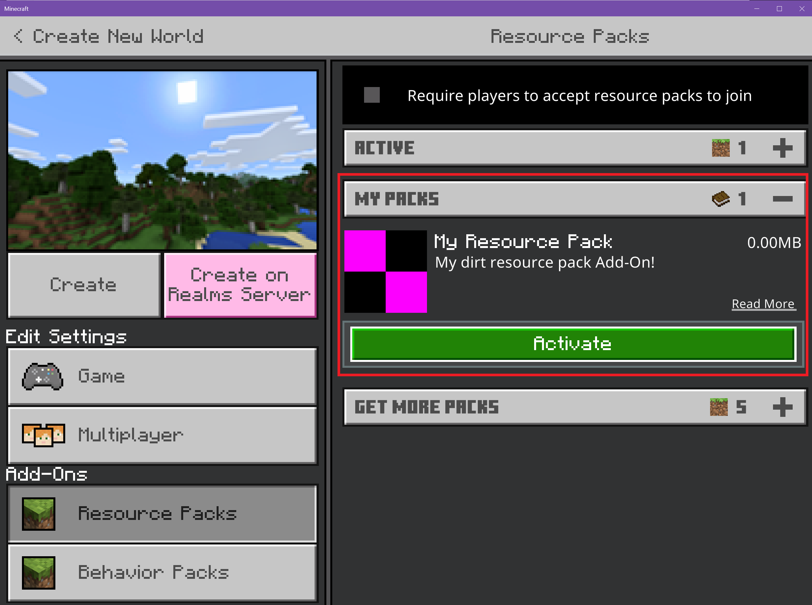

Ahora que se creó la estructura de carpetas, puedes colocar tus texturas personalizadas allí.
Puedes descargarlo y guardarlo en tu carpeta blocks o seguir estos pasos para crear tu textura:
Abre un editor de imágenes como MS Paint.
Ve al menú Archivo y selecciona Propiedades.
Configura el Ancho y la Altura en 16píxeles cada uno.
Haz clic en Aceptar.
Ahora puedes diseñar un patrón o cualquier obra de arte en el editor. Para hacer que el cuadrado sea
verde, se agregó un color de relleno simple.
Cómo probar el pack
Ahora que el pack tiene un archivo de manifiesto y un archivo de textura, puedes iniciar Minecraft y
probar tu complemento de recurso nuevo.
Tu textura personalizada se usará en cada bloque dirt.png del mundo, pero no se usará en los bloques
de tierra que tengan pasto porque tienen un nombre diferente.
Inicia Minecraft y selecciona Jugar.
Selecciona Crear un mundo nuevo.
En Configuración, desplázate hacia abajo hasta la sección Complementos.
Haz clic en Packs de recursos para ver todos los packs disponibles.
Haz clic en MY PACKS en el menú desplegable para abrirlo.
Selecciona My RESOURCE Pack y haz clic en Activar para agregar el pack de recursos al mundo.
Haz clic en Crear para crear tu mundo.
